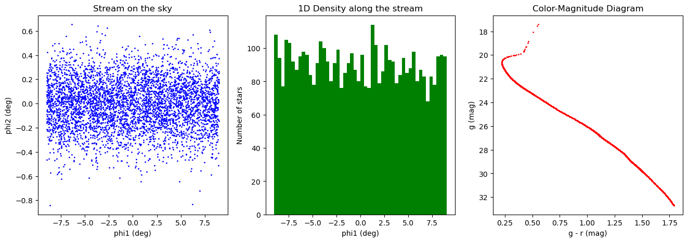
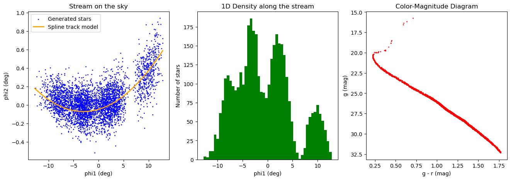

Streamobs: generate stream mocks#
Generate stellar stream mock catalogs from configuration files and complete existing tables with missing columns. Streamobs allows sampling of the following quantities:
(
phi1,phi2): stellar coordinates in the stream framedist: distance modulus of stars{survey}_{band}: apparent magnitude in a given photometric band of a chosen survey
Future versions may also include sampling of proper motions and velocities.
Streamobs can further convert these intrinsic quantities into observed quantities.
For more details, see the notebook tutorial_inject_stream.ipynb.
In this tutorial, you’ll learn to:
Define model components: density, track, distance modulus, isochrone
Build or load a configuration and sample a mock catalog
Complete partial catalogs (e.g., by adding magnitudes)
import sys
import os
import pandas as pd
import yaml
import numpy as np
import matplotlib.pyplot as plt
import scipy
# Import necessary modules form streamobs
%load_ext autoreload
%autoreload 2
from streamobs.utils import parse_config
from streamobs.model import StreamModel
1) Build a stream configuration#
To set up a stream model, we use a configuration file or dictionary that defines all necessary components. It can include:
density – samples
phi1values along the streamtrack – gives
phi2as a function ofphi1(center + spread, using a Gaussian or Uniform sampler)distance_modulus – defines \(DM(phi1)\) for computing apparent magnitudes
isochrone – samples the color–magnitude diagram (required to generate magnitudes)
You can choose how each quantity depends on phi1 (e.g., constant, linear, spline, etc.).
Notes:
To generate magnitudes, you need at least both
distandisochrone.The velocity model is currently a placeholder (returns NaN).
Samplers and functions are selected using the
typekeyword (e.g.,"Uniform","CubicSplineInterpolation").
# Build a config dictionary directly
config = {
# Density model
"density": {"type": "Uniform", "xmin": -9.0, "xmax": 9.0},
# Track model
"track": {
"center": {
"type": "Constant",
"value": 0.0,
}, # center line of the stream in degrees
"spread": {"type": "Constant", "value": 0.2}, # spread of the stream in degrees
"sampler": "Gaussian",
}, # how to sample across the stream
# Isochrone model
"isochrone": {
"name": "Marigo2017", # isochrone set name
"survey": "lsst", # survey for filter set
"age": 12.0, # Age in Gyr of the population
"z": 0.0006, # Metallicity of the population
"band_1": "g", # first band for color-magnitude
"band_2": "r", # second band for color-magnitude
"band_1_detection": True,
},
# Distance modulus model. Here an example of a constant distance modulus
"distance_modulus": {
"center": {"type": "Constant", "value": 16.5},
"spread": {"type": "Constant", "value": 0.0},
},
}
# or load from a config file
# config_path = os.path.join(base_dir, 'config', 'toy1_config.yaml')
# config = parse_config(config_path)['stream']
print(config)
{'density': {'type': 'Uniform', 'xmin': -9.0, 'xmax': 9.0}, 'track': {'center': {'type': 'Constant', 'value': 0.0}, 'spread': {'type': 'Constant', 'value': 0.2}, 'sampler': 'Gaussian'}, 'isochrone': {'name': 'Marigo2017', 'survey': 'lsst', 'age': 12.0, 'z': 0.0006, 'band_1': 'g', 'band_2': 'r', 'band_1_detection': True}, 'distance_modulus': {'center': {'type': 'Constant', 'value': 16.5}, 'spread': {'type': 'Constant', 'value': 0.0}}}
# Create stream model and generate stars
stream_model = StreamModel(config)
stream_df = stream_model.sample(4500)
# The dataframe contains: phi1, phi2, distance, magnitudes, etc.
print(f"✓ Generated {len(stream_df)} stars")
print("\nFirst 5 stars:")
print(stream_df.head())
✓ Generated 4500 stars
First 5 stars:
phi1 phi2 dist mu1 mu2 rv lsst_g_true lsst_r_true \
0 4.739512 0.015756 16.5 None None None 28.982359 27.582928
1 -1.499554 -0.343139 16.5 None None None 27.581603 26.354772
2 8.207016 -0.176948 16.5 None None None 26.265005 25.228614
3 0.680482 -0.088033 16.5 None None None 27.004769 25.868177
4 4.064195 0.077374 16.5 None None None 27.373922 26.179369
mass
0 0.158219
1 0.246747
2 0.387048
3 0.299648
4 0.265148
# Quick look: sky track, 1D density, CMD
fig, ax = plt.subplots(1, 3, figsize=(16, 5))
# Stream on the sky
ax[0].scatter(stream_df["phi1"], stream_df["phi2"], s=1, color="blue")
ax[0].set_xlabel("phi1 (deg)")
ax[0].set_ylabel("phi2 (deg)")
ax[0].set_title("Stream on the sky")
# 1D density
ax[1].hist(stream_df["phi1"], bins=50, color="green")
ax[1].set_xlabel("phi1 (deg)")
ax[1].set_ylabel("Number of stars")
ax[1].set_title("1D Density along the stream")
# Color-magnitude diagram
ax[2].scatter(
stream_df["lsst_g_true"] - stream_df["lsst_r_true"],
stream_df["lsst_g_true"],
s=1,
color="red",
)
ax[2].set_xlabel("g - r (mag)")
ax[2].set_ylabel("g (mag)")
ax[2].invert_yaxis()
ax[2].set_title("Color-Magnitude Diagram")
Text(0.5, 1.0, 'Color-Magnitude Diagram')

2) Spline-based configuration#
You can model a more realistic stream shape using cubic splines, particularly for:
Linear density: \(\sqrt{2\pi} \times \text{peak intensity} \times \text{spread}\)
Distance modulus
Track and width
In this example, we use data from data/patrick_2022_splines.csv and select stream == 'phoenix'.
# Nodes and values for the spline-based stream model (from Patrick et al. 2022, for Phoenix stream)
# One may read these from a CSV file instead of hardcoding them, cf to config/atlas_spline_config.yaml
intensity_nodes = np.array(
[-13.0, -9.75, -8.125, -4.1640625, -3.25, -1.625, 1.625, 6.5, 8.125, 13.0]
)
intensity_node_values = np.array(
[
2.35582279e-07,
2.65789495e-02,
5.94765580e-02,
7.20106921e-02,
9.96003626e-02,
4.68656926e-02,
7.42352023e-02,
4.75688845e-06,
1.73046024e-02,
4.08879937e-08,
]
)
spread_nodes = np.array([-13.0, 13.0])
spread_node_values = np.array([0.0992389, 0.17083177])
center_nodes = np.array([-13.0, 4.33333333, 13.0])
center_node_values = np.array([0.19313599, 0.07139282, 0.60245054])
distance_nodes = np.array([-13.0, 13.0])
distance_node_values = np.array([16.38285347, 16.1136374])
config_spline = {
# Density model using cubic splines from CSV
"density": {
"type": "lineardensitycubicsplineinterpolation",
"intensity_nodes": intensity_nodes,
"intensity_node_values": intensity_node_values,
"spread_nodes": spread_nodes,
"spread_node_values": spread_node_values,
},
# Track model: center and spread as cubic splines
"track": {
"center": {
"type": "CubicSplineInterpolation",
"nodes": center_nodes,
"node_values": center_node_values,
},
"spread": {
"type": "CubicSplineInterpolation",
"nodes": spread_nodes,
"node_values": spread_node_values,
},
},
# Isochrone model
"isochrone": {
"name": "Marigo2017",
"survey": "lsst",
"age": 13.0,
"z": 0.0004,
"band_1": "g",
"band_2": "r",
"band_1_detection": True,
},
# Distance modulus model as a cubic spline (flat default)
"distance_modulus": {
"center": {
"type": "CubicSplineInterpolation",
"nodes": distance_nodes,
"node_values": distance_node_values,
},
"spread": {"type": "Constant", "value": 0.0},
},
}
# Optional: sample using the spline-based config
stream_model_spline = StreamModel(config_spline)
stream_df_spline = stream_model_spline.sample(4000)
print(f"✓ Generated {len(stream_df_spline)} stars with spline density")
stream_df_spline.head()
✓ Generated 4000 stars with spline density
| phi1 | phi2 | dist | mu1 | mu2 | rv | lsst_g_true | lsst_r_true | mass | |
|---|---|---|---|---|---|---|---|---|---|
| 0 | 11.025280 | 0.206266 | 16.134085 | None | None | None | 27.764482 | 26.518739 | 0.189837 |
| 1 | -3.956590 | 0.141461 | 16.289214 | None | None | None | 28.585344 | 27.239462 | 0.156199 |
| 2 | 11.894469 | 0.613266 | 16.125085 | None | None | None | 26.288612 | 25.246169 | 0.315157 |
| 3 | -3.768348 | -0.184497 | 16.287265 | None | None | None | 28.440219 | 27.112679 | 0.162797 |
| 4 | 3.090001 | 0.247316 | 16.216250 | None | None | None | 26.211489 | 25.189501 | 0.336810 |
fig, ax = plt.subplots(1, 3, figsize=(16, 5))
# plotting the stream on the sky
ax[0].scatter(
stream_df_spline["phi1"],
stream_df_spline["phi2"],
s=1,
color="blue",
label="Generated stars",
)
x_val = np.sort(stream_df_spline["phi1"].values)
spline_val = scipy.interpolate.CubicSpline(center_nodes, center_node_values)(x_val)
ax[0].plot(x_val, spline_val, color="orange", lw=2, label="Spline track model")
ax[0].set_xlabel("phi1 (deg)")
ax[0].set_ylabel("phi2 (deg)")
ax[0].set_title("Stream on the sky")
ax[0].legend()
# Plotting the 1D density along the stream
ax[1].hist(stream_df_spline["phi1"], bins=50, color="green")
ax[1].set_xlabel("phi1 (deg)")
ax[1].set_ylabel("Number of stars")
ax[1].set_title("1D Density along the stream")
# plotting Color magnitude diagram
ax[2].scatter(
stream_df_spline["lsst_g_true"] - stream_df_spline["lsst_r_true"],
stream_df_spline["lsst_g_true"],
s=1,
color="red",
)
ax[2].set_xlabel("g - r (mag)")
ax[2].set_ylabel("g (mag)")
ax[2].invert_yaxis()
ax[2].set_title("Color-Magnitude Diagram")
Text(0.5, 1.0, 'Color-Magnitude Diagram')

3) Complete an existing catalog#
StreamModel.complete_catalog fills only the requested columns while preserving existing values (except for magnitudes and velocities, which are regenerated together for consistency).
Dependencies:
phi2anddistrequirephi1magsrequire bothdistandisochrone
Input formats: can be a
DataFrame,dict, path to a CSV file, orNone(with a specifiedsizeto generate the full catalog)
# Let's build a catalog with missing columns to complete
# Here for example we keep only 'phi1' and 'phi2', and drop others
stream_df_sub = stream_df.drop(
columns=["lsst_r_true", "dist", "lsst_g_true", "mu1", "mu2", "rv"]
).reset_index(drop=True)
print("\nCatalog with missing columns:")
print(stream_df_sub.head())
Catalog with missing columns:
phi1 phi2 mass
0 4.739512 0.015756 0.158219
1 -1.499554 -0.343139 0.246747
2 8.207016 -0.176948 0.387048
3 0.680482 -0.088033 0.299648
4 4.064195 0.077374 0.265148
Fill every missing columns#
# Now we can use `complete_catalog` to fill in the missing columns amoung ['phi1', 'phi2', 'dist', 'mag_g', 'mag_r', 'mu1', 'mu2', 'rv']
completed_catalog = stream_model.complete_catalog(
catalog=stream_df_sub, save_path=None, inplace=False, verbose=True
)
print(completed_catalog.head())
Velocity model not defined; skipping velocities.
Filled 4500 dist values.
Filled ['lsst_g_true', 'lsst_r_true'] (missing rows only).
phi1 phi2 mass dist lsst_g_true lsst_r_true
0 4.739512 0.015756 0.158219 16.5 28.982359 27.582928
1 -1.499554 -0.343139 0.246747 16.5 27.581603 26.354772
2 8.207016 -0.176948 0.387048 16.5 26.265005 25.228614
3 0.680482 -0.088033 0.299648 16.5 27.004769 25.868177
4 4.064195 0.077374 0.265148 16.5 27.373922 26.179369
Fill only specific columns#
# Example: fill only magnitudes
subset = stream_df_sub.copy()
completed_mags = stream_model.complete_catalog(
catalog=subset,
columns_to_add=["lsst_g_true", "lsst_r_true"],
inplace=False,
verbose=True,
)
completed_mags.head()
Filled 4500 dist values.
Filled ['lsst_g_true', 'lsst_r_true'] (missing rows only).
| phi1 | phi2 | mass | dist | lsst_g_true | lsst_r_true | |
|---|---|---|---|---|---|---|
| 0 | 4.739512 | 0.015756 | 0.158219 | 16.5 | 28.982359 | 27.582928 |
| 1 | -1.499554 | -0.343139 | 0.246747 | 16.5 | 27.581603 | 26.354772 |
| 2 | 8.207016 | -0.176948 | 0.387048 | 16.5 | 26.265005 | 25.228614 |
| 3 | 0.680482 | -0.088033 | 0.299648 | 16.5 | 27.004769 | 25.868177 |
| 4 | 4.064195 | 0.077374 | 0.265148 | 16.5 | 27.373922 | 26.179369 |
Note: the distance modulus is also added, since it is needed to convert absolute magnitude sampled from the isochrone, to apparent magnitudes (mag_gand mag_r here).
Tips and Troubleshooting#
If magnitudes are missing or NaN, make sure your config includes both
distance_modulusandisochronesections.To keep colors consistent,
complete_catalogregenerates bothmag_gandmag_rwhenever one needs to be computed.Column names are automatically standardized (e.g.,
'g_mag'→'mag_g'); see_standardize_columns_name.The velocity model is currently a placeholder and returns NaN values.
Conclusion#
Streamobs provides a flexible framework to build and complete stellar stream mock catalogs, from simple analytic models to spline-based configurations. Future updates will include proper motions, velocities, and improved documentation for easier user adoption.
You can find more informations in the full documentation.